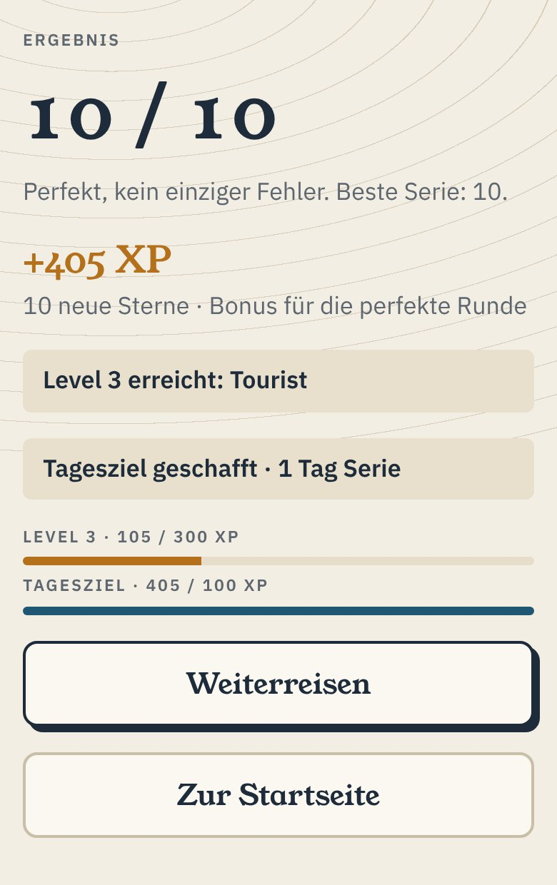

Orbista
Länder-Quiz mit 197 Flaggen und Hauptstädten. Weiterreisen, Sterne sammeln, Stempel in den Reisepass.



- 1Thema wählen: Flaggen, Hauptstädte oder beides
- 2Runden mit 10 Fragen, erst auswählen, später eintippen
- 3Region für Region die Welt bereisen und Stempel sammeln
Jetzt spielenOhne Anmeldung. Dein Fortschritt bleibt auf diesem Gerät.